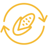

America is Cornfed through corn farmers’ commitment to
sustainability, innovation and the impact they make on their rural economies.
Watch the video

Sustainability
Through continued advances and efficiencies in land, water and energy use,
corn farmers further their mission to be stewards of the land. See how U.S. farmers are committed to
creating a more sustainable future.
Grit, passion and perseverance drives corn farmers to succeed no matter what
obstacles they face. Read more on how corn farmers are advancing innovation on their farms.
Corn farmers add $73,600,000,000 to the U.S. economy annually. Dig into how
farmers economic contributions enhance the economy on both the local and national levels.